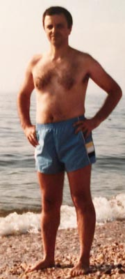
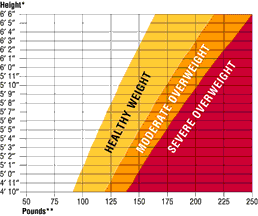
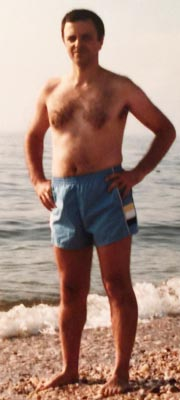
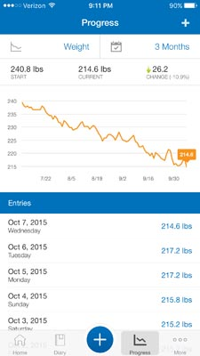
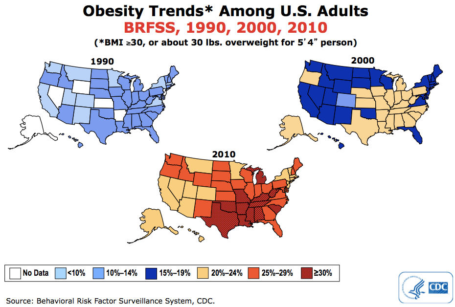
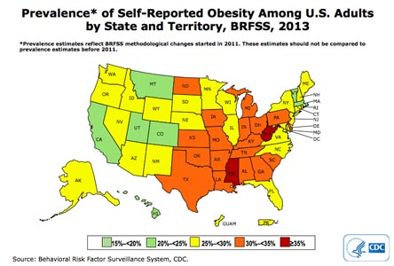
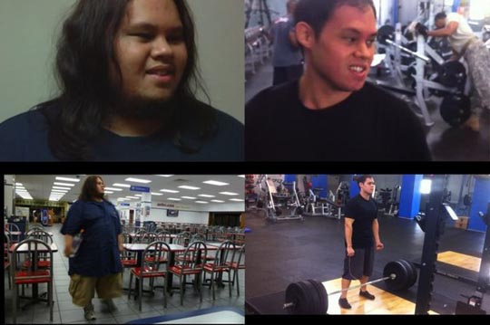
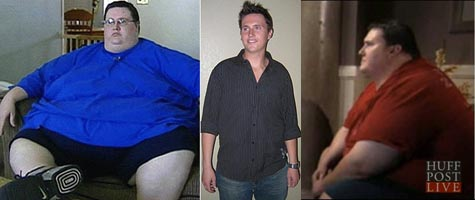

Lev in 1992 at 160 lbs

December 2010
at 268 lbs.

September 2015
at 220 lbs (lost 48 lbs)
Recent graph of my weight
| LevSelector.com |
The new presentation (2021) is on youtube:
in English: https://www.youtube.com/watch?v=XJ0RsYjh9bM
in Russian: https://www.youtube.com/watch?v=m8CJudOHnbs
Slides (in English): https://github.com/lselector/misc/blob/master/_Life_Lose_Weight.pdf
Below is the old version as HTML edited in 2015.
|  | - Secret to losing weight |
|
I have found the secret to losing weight ------------------------------
 |
December 2010 at 268 lbs. |
September 2015 at 220 lbs (lost 48 lbs) |
 Recent graph of my weight |
-
To see waht works, just go to youtube - and search for "big change the film" and for "blue zones diet".
- https://www.youtube.com/results?search_query=big+change+the+film
- https://www.youtube.com/results?search_query=blue+zones+diet
Also look at this PDF file: How_To_Lose_Weight.pdf
It is very simple to lose weight.
Eat vegetables, walk outside (get yourself a dog).
Remove or reduce all animal products, meats, milk, cheeses, all dairy.
Remove all boxed or processed foods (including sugar, bread, all oils (even olive oil)).
That's it.
Vegetables have very low calory density.
You can eat a lot of them - and still lose weight.
And as you remove sugar and processed foods - your hunger will disappear.
So you will feel ok to skip meals (or even fast for a day or two).
-
I was overweight for ~20 years. It took me ~20 years to find what works (and what doesn't). I am losing weight in a very relaxed way. - https://intensivedietarymanagement.com (Jason Fung - book "Obesity Code") Main ideas: - oscillating (eat - stop_eat, a.k.a. intermittent fasting), works and doesn't cause slowdown. Recommended lengths of regular fasting are from 12 hours to several days My method is close to described in leangains.com - I just skip breakfast and lunch every day (12..20 hrs fast). Another important point - eat mostly vegetables, - damaged metabolism (even diabetes type 2) can be reversed in just 2 weeks - removing stress and oscillating ( between activity and resting ) is very important. - inner work. I took the course "Bright Line Healing", which is associated with "Bright Line Eating". |
When I came to USA in 1991, my weight was ~135 lbs.
In America I have discovered fresh juices, fast food, fries, etc.
I started gaining weight.
I also started trying to lose weight.
Herbalife, gyms, multiple dieting approaches (sometimes extreme).
I was losing weight, then gaining more, then losing, then gaining even more.
Despite numerous attempts to lose weight, over ~19 years I ended up
gaining more than 130 lbs,
peaking at 268 lbs in 2010.
It was like using manual autojack.
Push down - it lifts up.
Over and over again.
Good thing that I didn't give up!
Eventually in 2015 I believe I have found an approach that works.
Today I am at 214 lbs (lost ~54 lbs),
and my weight is steadily going down.
My goal is to return close to 145 lbs in a couple of years.
And may be return to 135 lbs (my 30 y.old weight).
I will be updating pictures from time to time so that you could see before/after.
Note - I am a programmer, so I spend most of my day sitting in front of a computer.
I don't go to gym, but recently I started working out with a personal trainer
at a children's playground near my house twice a week.
Overall I don't move much.
I am using a very relaxed lazy approach to losing weight.
I don't follow any strict diet.
Below you will find detailed descriptions of what I am doing,
as well as links to original authors.
Note:
it is very important that I don't force myself to diet or to lose weight.
I tried will power before. I tried dieting, going to gym 3-4 times per week.
It worked, but it was taking real time, effort, and money.
And it was not sustainable long term, because as soon as I would
change the job and break the routine, I would immediately start
gaining weight again.
That's why I got convinced that it is really important to follow
a program which you can stick to long term and which doesn't
require going to gym, spending lots of time, or forcing yourself.
My current program is easy, I feel myself in control,
and I know that I will never gain the weight back again.
Obesity Epidemic in USA ------------------------------
People in America become more and more obese desipite the fact that everyone talks about losing weight.
There are diets, special programs, gyms, ...
Watch this terrifying 1-min video: US Obesity Epidemic, 1985-2010
- https://www.youtube.com/watch?v=uH0tWM4H0h8
The data in this video are from government data here:
- http://www.cdc.gov/obesity/data/prevalence-maps.html
( click here to see the local copy of the PowerPoint presentation )
Here is the summary image:

Note - starting 2011 the methodology of collecting data has changed, but the trend still continues during 2011-2013.
Here is the most recent map - for 2013:

There is a lot of discussion about the causes of growing obesity.
The main causes are probably grains, sugars, corn, fructose syrup, etc. which are added into everything.
Also artificial foods contain less nutrients.
Also portions are huge.
Also sugary drinks are served everywhere.
Most of the foods in the store are not good for your health.
Living in the US is like walking across a minefield.
Probably 90% of foods which are being sold in supermarkets are not good for you.
If you will be doing what is considered "normal" - you will get fat and sick like the rest of americans.
To stay healthy (and lean) you have to do something different from what is considered "normal".
People Don't Lose Weight ------------------------------
Ask anyone how to lose weight.
And people will give you a detailed answer.
Everyone knows the formula "Eat less - move more" (which doesn't work long term, by the way).
It is all over TV and media.
There are approximately 37 thousand books on amazon related to weight loss.
I just googled "how many people are on a diet in america", and got this:
"estimated 45 million Americans diet each year and spend $33 billion annually on weight loss products".
There are other estimates which are much higher (more than 100 Mln).
So people know what to do. Or do they?
Millions of people are on a diet.
But the probability of losing weight and keeping it off for long time is actually only 1 in 10,000.
Yes, only one out of ten thousand succeeds !!
Most of the people fail.
You probably know someone who has lost weight - and then gained it back.
There are so many diets, shakes, pills.
There are also programs, like Weight Watches, for example.
But even W.W. have less than 2% success rate.
So losing weight is not as simple as
"Eat less and exercise more".
Willpower is very limited ------------------------------
Willpower is very limited and it is easy to completely drain it by doing
any kind of work which requires decision making (even simple decisions
like weather to delete or not an email).
Here is a very good book about it:
- Willpower: Rediscovering the Greatest Human Strength - by Roy Baumeister & John Tierney.
Also here is a very good article:
- http://www.nytimes.com/2011/08/21/magazine/do-you-suffer-from-decision-fatigue.html
People usually break their resolutions when they are tired
and their willpower is at its minimum. So one of the tricks is to
understand this - and change your life style so that you don't
have to making food decisions at times when your willpower is low.
Also you should learn to replenish your willpower.
And to avoid activities which drain it (like torturing yourself with exercise, for example).
You can help you by:
- adding social support and/or influence
- create habits - then use the force of habits to overpower urges.
Food Addiction is Real ------------------------------
Many people have developed food addictions.
Food addictions can be as strong as drug addiction or alcoholism.
FA is real, it was proven by multiple scientific studies.
Every year more than 100 thousand people in America lose their limbs or go blind
because of type 2 diabetes. Which could've been prevented by simply
changing their eating habits. But those people struggled and failed to do this.
Some foods (like sugar or flower) are extremely potent at promoting FA (Food Addiction).
It was shown that brain chemistry changes (down-regulation of dopamin receptors).
The good thing is that there are ways to reverse the process. Read on.
Forcing yourself doesn't work ------------------------------
When people go an a diet, they mostly see it as a struggle and sacrifice.
But willpower usually only works for a short term (several weeks or several months).
It never works long term.
Why?
Because the basic instinct of a human brain is to avoid pain and to gain pleasure.
This is our nature.
You can not go against the nature for long term.
Nobody can.
Also, the more you prohibit something - the more desirable it becomes.
Remember prohibition times in USA (when alcohol was prohibited)?
Prohibition has caused an effect oposite to the desired outcome.
Same with diet. Putting yourself on a strict limiting diet create a strong opposing
action. In reality the surest way to gain weight long term is to put yourself on a strict diet.
If you talk to people who has kept their weight off for a long time - you will find
that they found a way to stay thin without torturing themselves.
The trick is to make adjustments in your habits in such a way that they are easy
to follow and keep you satisfied and happy. These habits are different for different
people. You have to find your own. You need to
learn about weight regulation,
foods, brain, life styles. It takes time.
If you are a highly-addicted type - then you should be very strict at preserving
your new habits. You should stay "clean" for years and years.
The attraction to certain foods never goes away.
You should not blame yourself when you accidentally slip into old bad behavior.
Instead just resume good behaviors.
Jon Calvo ------------------------------
My initial inspiration in 2015 was (is) Jon Calvo.
He has lost ~190 lbs (from 340 lbs down to 150 lbs).
His current weight is 175 lbs (he gained some muscle).

Jon has tried different approaches.
Eventually what worked for him:
- eating: intermitted fasting + macro nutrients cycling
- exercises: resistance training (heavy, power-lifting)
- app for smartphone: MyFitnessPal
Watch this inspiring short 3 min video:
- https://www.youtube.com/watch?v=ZrasQOojFyo
He explains in detail how he does it in 3 short videos:
- https://www.youtube.com/watch?v=i4yu6I7oEhQ
- https://www.youtube.com/watch?v=URTc15IjCMg
- https://www.youtube.com/watch?v=bOjslLxZOgE
also:
- https://www.youtube.com/user/kalimgrad
- https://www.facebook.com/notes/jon-calvo/my-weight-loss-methodology/10152155925491664
- https://www.facebook.com/jontaro
Jon posts updates, interviews, etc. here:
- https://www.facebook.com/WeareWillpower
Jon posts his progress on myfitnesspal.com web site:
- http://www.myfitnesspal.com/user/Jontaro/profile/Jontaro
What I am doing to lose weight ------------------------------
What I am doing is very simple, relaxed and lazy.
It is not as disciplined and precise as what Jon Calvo is doing.
He exercises 3 times per week - and does carb cycling
(eating more carbs on training days, less carbs on rest days).
I don't exercise and don't do carb-cycling.
May be I will have to start doing it through when I will get leaner.
The most important for me was the realization that:
- You can stop eating for 2-3 days without any negative effect to your abilities or health.
- You will NOT go into starvation mode if you don't eat for for a day.
- You should NOT overeat even if you are following low carb diet. Average daily calories do matter.
- No sugar, no bread. You should
strictly cut off all sugars and all flour-based foods.
Also limit or remove high-carb foods (sweet drinks, dried fruites, dates, and other very sweet fruites,
chips,
fries, chocolate, protein bars, etc.).
- It is OK to eat at night and skip breakfast.
If you don't exercise, then it doesn't matter how you distribute your food throughout the day.
You can eat mostly in the morning, or at night, or spread into 3..6 meals throughout the day.
But most comfortable is to eat the main meal at night ~2 hours before going to sleep.
- it is difficult to limit yourself to many small portions.
It is much easier and more comfortable to stop
eating for some time (first half of the day),
and then eat normal portions at night.
- if you feel hungry - it doesn't mean that your body needs nutrition.
You can go without food for another 2-3 days.
May be what you feel is just stress, or you need to drink water.
May be you
didn't have enough sleep.
So try to drink, relax, walk, or exercise.
Don't use food as a stress reliever.
- Don't use exercise as a method to lose weight.
You don't have to exercise to lose weight.
Walking helps. Exercise helps too, but you don't have too.
- Proper eating is the main thing:
1. How much your eat (Calories), macros (protein, fat, carbs)
2. Food choices (whole natural foods)
3. Structure (how many meals, when (intermittent fasting), cheat days, etc.)
Here is what I am doing.
Very simple:
- Most important - skip breakfast and lunch (avoid snacks too), and only eat at night at ~8..9pm.
This is called intermittent fasting.
Every day I have a 16-20 hr fasting period followed by 8-4 hr feeding period.
- get on the scale every morning - and enter my weight into MyFitnessPal app on my iPhone.
- http://www.myfitnesspal.com/profile/levselector764
- drink lots of water, also some coffee. Carry a glass water bottle in my bag.
- keep total calorie intake low (don't over-eat at night).
- make sure to eat enough protein (meat, chicken, fish in my case) and some fat (but not much).
-
get carbs from vegetables/salads. Fruits are OK.
-
Cut out completely all processed carbs (sugar(s), bread, pasta, corn syrup, sweet drinks, dried fruites , craisins, etc.).
Ref?ned or sweet-loaded foods create addiction and cravings.
They change sensitivity of dopamin receptors in your brain.
Once you are hooked - you only can feel good if you consume them.
Think of them as of addictive drugs. You have to go clean, to restore your hormonal regulation.
- Do NOT start exercising, because it takes willpower. Do some stretching, walking.
Later you can add strength exercises (bodyweight, dumbels, rubber band).
- I am forgiving and kind to myself. I try to relax, sleep more. Do something active on weekends.
- It is OK to cheat from time to time. I am not taking things too seriously. Be flexible.
But when cheating happens - learn from it to make it easier next time.
Avoid an avalanche. Avoid "What the hell" effect.
Recognize that the main danger is not in cheating, but in allowing one cheat meal to snowball into many.
- You are NOT obligated to eat/drink when other people around you are doing it (at a party/meeting/etc.).
It is the same as that you are not obligated to smoke if other people are smoking.
Books and websites ------------------------------
As a very minimum, read/watch/listen to these four very good authors:
| Martin Berkhan
- http://www.leangains.com |
16h fast, 8h eating - lots of simple effective strategies. |
| Brad Pilon
- http://www.bradpilon.com - http://www.eatstopeat.com |
The main idea I have learnt from Brad is that you should not be afraid of stopping eating for 1,2,3 days. That stopping eating for a day or two is healthy and does not decrease your physical or intellectual abilities. |
| Nate Miyaki
- http://www.natemiyaki.com - http://halfdaydiet.org |
Nate explains very well why different people need different diets. Why low carb is good for someone who doesn't exercise, but not good for an athlete. Deep knowledge, practical advice, good sense of humor. |
Ari Whitten |
Ari is extremely knowledgable. He recommends to eat simple natural whole foods, lots of vegetables, "low reward" foods (avoid foods which are too sweet, etc.), get enough protein, get micro-nutrient rich food, avoid toxic foods (fast-food like chemically composed stuff), don't force-restrict callories, good natural carbs are OK, fix your Circadian Rhythm (and sleep enough), reduce stress, move more during the day (use standing desk, etc.). |
| Susan Peirce Thompson
- http://susanpeircethompson.com/blog/ |
Susan is a specialist (Ph.D.) in psychology of eating addictions. |
| Ray Cronise - |
Under-eating (fasting) = health, Over-eating = disease |
More great stuff:
| Ori Hofmekler | http://www.warriordiet.com
- eat one main meal at night (Paleo style) + exercise while fasting |
| Gary Taubes | Why We Get Fat: And What to Do About It
- last 150 years of research reviewed in one small book |
| Dr. Atkins | New Diet Revolution
- classic work on low-carb approach |
| Robb Wolf | The Paleo Solution: The Original Human Diet
- Robb Wolf against grain and gluten |
Even more great stuff:
Lose Weight Advice ------------------------------
If you are planning to slim down, you may find these my notes very useful.
I was trying to lose weight many times over the last 15-20 years - without any success.
But I am successful now (finaly).
Here are some things I have discovered which worked for me.
(1) Structure eating during the day using intermittent fasting appproach.
Basically just skip breakfast and lunch, and only eat after work at ~8pm.
No snacks (almost). Lots of water.
(2) Make your food selection close to paleo diet.
Protein-focused - make sure you get enough protein (but not too much),
some fat,
and vegetables. And some whole fruit.
(3) It is not a battle. It is impossible to do this on "will power". Not long term.
(4) You should allow yourself to eat anything you like from time to time.
You should not put yourself into prison of promising to never eat something.
(5) You have to love yourself and love what you eat and how much you eat.
This is very important. You should love yourself as you are.
You should not be ashamed of yourself or blame yourself.
Do not fight with yourself. Accept yourself, forgive yourself, love yourself.
(6) You have to start changing what you eat by finding things
which are better for you - and which you love.
Search youtube for success stories.
(7) It is more about creating new alternative habits and introducing
new things into your life than removing bad habits.
You can't remove bad habits without first finding and installing new ones.
So don't try to "stop doing something".
Instead try to "start doing something new".
Add new foods.
Put new foods in your office table or in your fridge.
(8) If you do a lot of exercise - you will need to add carbs (fruit, rice, etc.).
But if you like me and mostly sit in front of the computer,
you most probably need to go lowcarb (Atkins' diet, paleo diet).
Definitely cut out processed carbs almost completely:
no sugar, bread, pasta, cereals, healthy bars, etc.
And I highly recommend to stop eating out at restaurants every day.
(9) I like to eat only in the evening. I skip breakfast and lunch
and only eat with my family when I return home from work.
(see Nate Miaki - half-day diet).
But if you eat during the day - start brining your own food to work.
Search youtube for lowcarb fridge or lowcarb recepes.
See what other people are doing.
(10) Snacks are more important (dangerous) than the main meals.
Avoid snacks if you can.
If you have to have them - then get good natural snacks. Don't buy "healthy" bars, etc.
Some people buy small fridges to keep snacks available under the table.
(11) Water is very important. I made a habit to regularly drink a glass of water.
First thing in the morning, first thing I do when I come to the office, or back home.
Before every meal. Etc. I carry a glass water bottle in my bag.
(12) You have to install small new routines. Like getting on the scale every morning
and enterring your weight into MyFitnessPal app on my smart phone.
Like
drinking more water, sleepng more, etc.
You also should make routines to avoid some situations in which you may be tempted to eat junk.
It is not about will power - it is about creating new routines, new habits.
(13) You have to create systems to avoid temptations.
You have limited amount of will power, and you will be tempted the most when
you are tired and nervous. So help yourself:
- create habits and routines, substitute discipline with habits.
- prepare meals in advance (or at least write what you will eat in advance)
- do NOT eat junk with others in social situations - it is OK to say NO.
- drink instead of eating
- distract yourself by talking to someone, texting, emailing, helping someone.
-
Meditate, pray, think about your life, feel gratitude, look at your family pictures on your phone, etc.
(14) Some things work, some don't. Some work for a period of time, and then stop working.
So you need to adjust, to change.
It is a constant discovery process.
(15) The process takes time. See estimates below.
It is not a sprint, it is not a battle.
It is all about installing small new habits one by one.
(16) Physical exercises may help, but also may deplete your will power.
So it is better to concentrate your will on setting up food habits.
You can start exercising later when you have new feeding habits.
(17) Do NOT use exercise to lose weight by burning calories.
Definitely not long term.
Use exercising to improve your health. And use strength
training to avoid losing muscle while on caloric deficit and losing weight.
| walking | The simplest thing is to walk and do more of any kind of simple body movements. Outside or inside. Use "Pacer" app for your smartphone to track how many steps per day you are doing (recommended min 10K). |
| simple "office" exercises |
simple "standing" exercises
like head rotation, circles with arms, trunk rotations, bending side-to-side and front-to-back, upper-body circles, squats, lunges, pushups, burpees, etc. |
| dedicated exercise sessions |
Strength + stretching, plyometrics, P90X, etc. |
The almost guaranteed way to extend life is
...
to simply limit food intake.
This was proven in
multiple experiments on animals
(rats, mice, monkeys, etc.).
To keep animals healthier you can also decrease
the
temperature (cool is better than hot), and provide
conditions for running, climbing, and playing.
Health benefits of limiting food intake (fasting) were
also shown multiple times for humans.
You can stop eating for several days (world record
is 382 without food), and only benefit
from it.
But most people are afraid to skip even a single meal!
On the other side if you put an animal (typically
a cat or a dog, or a human) into a warm apartment
with abundant food supply, the poor animal will get all
human
diseases,
including heart disease and cancer.
You don't need to eat all the time.
TV advertises food. But food is THE major killer.
Humans are the first species in the history who eat
not because they
need nutrition, but for comfort and
when they meet (socializing).
Before eating, ask yourself if your body needs this food,
or you are doing it for comfort or social reasons only.
Are you OK with killing yourself?
Carb Cycling ------------------------------
Progression of Body Builders' techniques over the years:
============
1st (very old) approach - 2-phase method: bulking & cutting.
Length of cycle - months.
bulking - exercise and eat a lot to gain muscle (and fat).
cutting - lose weight before competitions
(which results also in some muscle loss).
============
2nd method - anabolic diet. (anabolic = stimulating protein synthesis & muscle growth)
Length of cycle - one week:
Mon-Fri - eat no carbs (only protein and fat)
Sat, Sun - eat lots of carbs (plus protein and fat as usual)
============
3rd method - carb cycling.
Length of cycle - 1 day.
Basically you alternate low carb - high carb days.
Plus you have one cheat/refeeding day per week when you eat a lot of carbs.
Typical example:
Mon, Wed, Fri - workout days, elevated carbs
Tue, Thu, Sat - rest days, low carb
Sun - re-feeding day, lots of carbs
Also to break pattern, they do re-feeding week once per several weeks.
See good description here:
- http://www.t-nation.com/free_online_article/sports_body_training_performance/the_carb_cycling_codex
| Question | Answer |
| if you exercise and neet to add carbs, then when is a good time to eat carbs? |
if exercising heavy and after fasting, then a fruit 45-60 min before training helps (gives energy during training) Very good to eat carbs after training (within 3 hours) to help muscle to rebuild. Note - it doesn't matter when you take protein during the day, as long as you receive your daily norm. |
| max fat loss in 2-6 weeks |
1. get more precise and strict with your macros (protein, fat, carbs) |
Weight Loss Estimates ------------------------------
Here are my weight loss estimates.
Your numbers may differ.
Note - if you don't sleep enough, or under stress,
or eat very unhealthy, these numbers will not work.
The numbers below reflect these two ideas:
1. speed of losing weight is SLOW SLOW SLOW (unless you do something heroic).
2. speed mostly depends on total caloric intake.
Exercising helps, but eating contributes more.
You can "out-eat" any exercise.
3. if you are not an athlete, if you sit most of the day - then you should be low-carb.
========================================
My current weight - 222 lbs (Fall of 2015).
(peak on 1/1/2015 was 248, peak in 2010 was 268).
My LBW = 140 lbs (Lean Body Weight = weight without excess fat).
========================================
My Basal Metabolism ~1700 Kcal/day.
- http://www.bodybuilding.com/fun/bmr_calculator.htm
1500 Kcal for weight 140 lbs
2100 Kcal for weight 233 lbs
For estimates I am assuming a constant value of 1700 Kcal/day.
========================================
1 lb of fat = 3500 Kcal
Caloric deficit 500/day = 3500/wk = 1 lb/wk weight loss.
This deficit may be caused by:
- eating less
- exercising more
1 hr of exercising burns 300..500K (+200 after-burn).
So 1hr in gym EVERY DAY burns ~500/day, or 1 lb/wk.
Exercising 1 hr 3 times per week will cause ~0.5 lbs/wk loss.
========================================
Daily Daily Weekly (monthly)
Food Exercise weight loss
(Kcals) (hours) (lbs)
========================================
1700 0 0 (0/mo)
1200 0 1 (4/mo)
800 0 2 (8/mo) I am here
800 0.5 2.5 (10/mo) gym 3/week
800 1 3 (12/mo) gym daily
800 2 4 (16/mo) hero
800 3 5 (20/mo) super-hero
========================================
By being really consistent with the plan,
and by doing some extra
fasting or exercises, you can reasonably lose ~10 lbs/month.
When you start (your first month) - you will lose more, but then it slows down.
I am loosing at a speed ~7lbs/month (or even slower sometimes).
I decided that I will not rush it.
For me it is important to be comfortable and relaxed.
But if you want to push it by adding exercise, please note that
eating is still the most important factor. For example, you can
sweat for an hour in the gym, burn 500 Kcal, and then out-eat
your workout by eating just one burger (560 Kcal).
Here are some choices of exercises in the order of "laziness":
| Walking ~1 hr/day or some other type of activity. |
Here is how much calories you burn during 1 hour of different activities: Watching TV - 70 (basal) Computer/Desk work - 130-160 Walking - approx. 100 Kcal/mile (400 Kcal/h if walked 4 miles) Running - approx. 150 Kcal/mile (900 Kcal/h if ran 6 miles) Swimming -500-1000 Gym - 300-500 Moving (carrying boxes) - 650 Badminton - 420 Aerobics - 400+ Note: walking is actually pretty good. Note: swimming is really good. If water is cold - you will burn even more calories. |
| High-intensity bursting exercises ~15 min/day |
- "Pace: The 12-Minute Fitness Revolution" - book by Al Sears M.D. - http://www.turbulencetraining.com - Craig Ballantyne |
| "Heavy" (barbell):
Squat, Bench Press, Deadlift, Overhead Press, Barbell Row, etc. |
- http://jasonferruggia.com - Jason Ferruggia etc. |
Exercise ------------------------------
As I am losing weight, I am starting feeling that it is easier for me to move,
and that I want to move more.
Moving used to be difficult & tiresome.
But now it becomes pleasant.
So I gues going forward I will start moving more, and doing more exercises.
As a programmer I sit for 10-12 hrs/day in front of the computer.
It is very unhealthy.
I need to compensate this with movement.
I recently started doing short 2-5-min standing exercise sessions.
These are type of exercises I can do in the office.
The duration is short, so that I don't get sweaty.
I start with rotating my head and doing circles with arms.
Then do trunk rotations, bending from side to side, bending front to back,
making upper-body circles, squats, lunges, pushups.
Also I started walking 20min in the morning, 20 min at night.
And I do breaks at work, and just walk around the office.
Overall I walk ~1hr/day.
Here is a good article describing relationship between losing weight and exercise:
-http://natemiyaki.com/training/
--
Motivation ? ------------------------------
Search youtube for phrases like this:
lost 100 lbs
lost 100 lbs in
- https://www.youtube.com/watch?v=Q9GSkNu34MU - Edwin Velez - 140 lbs in 4 months
lost 200 lbs
- https://www.youtube.com/watch?v=kBYXtwlvVsw - John Moore lose 200 pounds in a year.
lost 300 lbs
lost 400 lbs
- https://www.youtube.com/watch?v=HEOt5KrkbEg - Brian Flemming
- https://www.youtube.com/watch?v=UErll3ArarI -
Ronnie Brower
- https://www.youtube.com/watch?v=G3PUeaUq5B0 - Garcinia Cambogia
- https://www.youtube.com/watch?v=jZjgGU3UVXk -
Ruby Gettinger (716lbs -> 315 lbs)
lost 500 lbs
- https://www.youtube.com/watch?v=u8kKA2J_eR4 - Nancy Makin - 703 lbs -> 170 lbs
- https://www.youtube.com/watch?v=PkpkAGEsIWc - Nancy Makin
- https://www.youtube.com/watch?v=lwYZH7qJxg8 - Nancy Makin
lost 650 lbs
lost 700 lbs
lost 800 lbs
- https://www.youtube.com/watch?v=Gzl8pukCbiY -
Mayra Rosales
What you will see:
- People gained weight mostly because they have used food to distract themselves
from some sort of pain (stress, emotional problems, etc.)
Also they were eating junk (sugar and flour based foods and drinks).
- There is no magic in what people were doing to lose weight: diet and exercise.
People have used different regimens, and it was mostly simply based on will power and discipline.
But most of these regimens are not designed for long-term maintenance.
Thus you should NOT use them as role models.
- TV mostly concentrates on drama, emotions, and amazing stories of fast and dramatic fat loss.
(20-30 lbs/month, 100..500 lbs loss). But the winners of those shows
("The Biggest Loser", "Extreme Weight Loss", etc.)
frequently gain their weight back. Because they lost weight not by creating
new good effective habits, but by using will power, which never works long term.
- https://healthyeater.com/biggest-loser-then-now -
- http://www.dailymail.co.uk/femail/article-2927207/We-fat-Former-Biggest-Loser-contestants-admit-controversial-regained-weight-endure-lasting-health-issues.html -
"We are all fat again ..."
- https://www.youtube.com/watch?v=DTlvDMBDIxQ - David Smith (trainer Chris Powell)
650 lbs >> lost more than 400 lbs >> gain a lot back

Also, the methods used on those shows are not healthy (LiveScience.com):
"... physicians and nutritionists worry the (Biggest Loser) show's focus
on competitive weight loss is, at best, counterproductive and, at worst, dangerous".
Contestants on the show lose upwards of 10 pounds per week
(... some contestants have lost 20–30+ pounds in that one week alone)